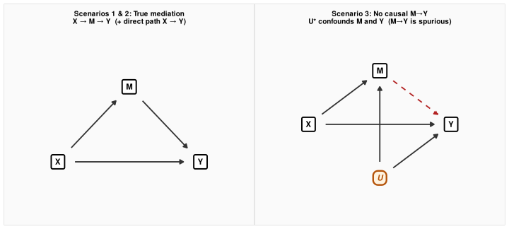
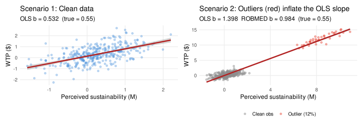
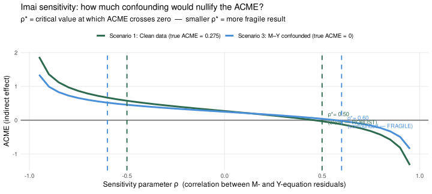
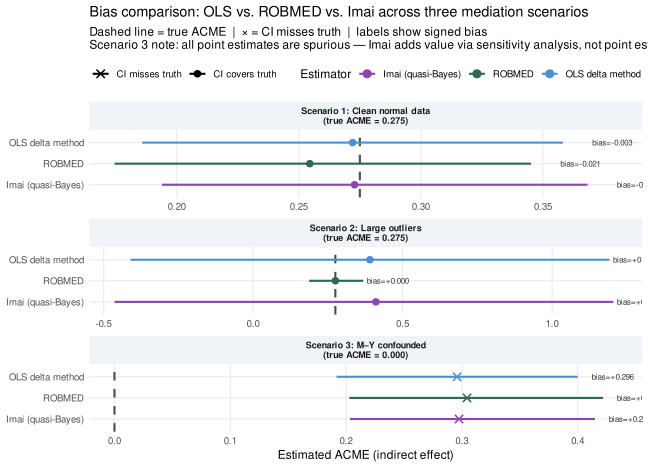
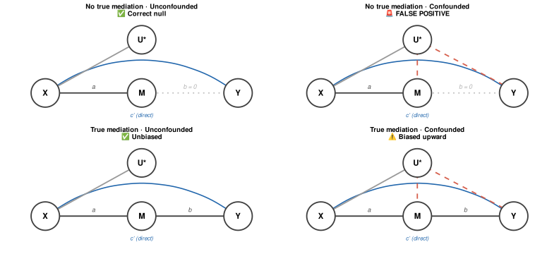
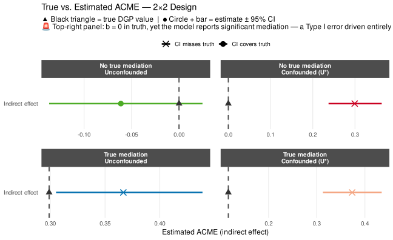

19 Part 5: Mediation — Does the Eco-Label Work Through Perceived Sustainability?
TipHow to use the code in this section
The code blocks throughout this section contain inline annotations explaining what data structures go in, what the key function arguments control, and what to look for in the output. Click any “▶ Code” triangle to expand a block and read the annotations alongside the code. Treat them as a guided checklist: wherever you see a comment starting with # ──, it marks a decision point you would need to revisit with your own data.
Mediation analysis asks whether the eco-label affects WTP directly or through a mechanism — here, perceived sustainability (M). Three estimators are compared across three scenarios that each challenge a different method.
| Scenario | Key feature | Who wins |
|---|---|---|
| 1: Clean normal data | No violations — a baseline | All methods perform well |
| 2: Large outliers | Correlated high-leverage points inflate OLS b-path | ROBMED wins |
| 3: M–Y confounded | Unobserved U causes both M and Y; true ACME = 0 | Imai sensitivity catches it |
NoteThe mediation arithmetic — and where it can break
Baron–Kenny mediation decomposes X’s total effect on Y into two paths:
\[\underbrace{X \xrightarrow{\;a\;} M \xrightarrow{\;b\;} Y}_{\text{indirect (ACME) = } a \times b} \quad + \quad \underbrace{X \xrightarrow{\;c'\;} Y}_{\text{direct (ADE)}}\]
The ACME (Average Causal Mediation Effect) is the product \(a \times b\). It has two failure modes that the three scenarios below are specifically designed to reveal:
- The b-path can be estimated on the wrong data — if outliers inflate the apparent slope between M and Y, \(\hat{b}\) is too large, and so is \(\hat{a} \times \hat{b}\). ROBMED addresses this.
- The b-path can be estimated on the wrong model — if an unobserved variable \(U^*\) drives both M and Y, the OLS \(\hat{b}\) picks up the \(U^*\) signal as if it were causal M→Y. No regression method alone can fix this; Imai’s sensitivity analysis quantifies how severe the problem would need to be to explain away the result.
A Module 1 failure mode: There is a third, often overlooked failure mode — measurement error in M. If perceived sustainability is measured as a single noisy item rather than a well-validated multi-item scale (Module 1 — reliability, CFA, convergent validity), the \(\hat{a}\) path is attenuated (like any regression coefficient on a mismeasured predictor) and the \(\hat{b}\) path is biased as well, because M carries both signal and noise into the Y regression. The practical implication: investing in high-quality mediator measurement at the design stage (multi-item constructs, established scales, pilot reliability checks) is not just good practice — it is a precondition for trustworthy mediation estimates. A large ACME from a single-item mediator may be entirely an artifact of differential measurement error.
A Module 2 connection: Mediation analysis is typically conducted on experimental data where X is randomised (as in Scenarios 1–3 here). This randomisation satisfies the a-path assumption (no confounding of X→M). But randomisation does not satisfy the b-path assumption — M is not randomised, so the M→Y step faces all the observational identification challenges of Part 2 of this module. The sensitivity parameter \(\rho^*\) below is a direct quantification of how much M–Y confounding would be needed to nullify the ACME, just as power analysis in Module 2 quantified how much sampling error could explain an apparent effect.
19.1 Causal Structures
19.2 Setup: Three DGPs
▶ Three mediation DGPs: clean normal data, large outliers, M–Y confounded
set.seed(2025)
N_med <- 350
X <- rbinom(N_med, 1, 0.5) # eco-label (1 = exposed to label)
# ── YOUR DATA: X is your binary treatment (0/1); replace rbinom() with your
# actual treatment column. N_med should equal nrow(your_df).
# Each df_sN below maps to your real data frame with columns:
# eco_label (or your treatment name), perc_sust (your mediator), WTP (outcome).
# True parameters (Scenarios 1 & 2)
a_true <- 0.80 # eco_label → perc_sust (strong a-path)
b_true <- 0.75 # perc_sust → WTP (strong b-path)
c_prime <- 0.30 # eco_label → WTP (direct path)
ACME_true <- a_true * b_true # 0.600 (large → needs big ρ to nullify → ROBUST)
# ── YOUR DATA: in real data you do NOT know a_true or b_true; these are set
# here only for ground-truth evaluation. With real data, run the
# run_mediation_triple() function directly on your data frame.
# ── Scenario 1: Clean normal data ────────────────────────────────────────────
# No violations; both OLS and ROBMED should recover ACME ≈ 0.275
M_s1 <- a_true * X + rnorm(N_med, 0, 0.60)
Y_s1 <- c_prime * X + b_true * M_s1 + rnorm(N_med, 0, 0.60)
df_s1 <- data.frame(eco_label = X, perc_sust = M_s1, WTP = Y_s1)
# ── Scenario 2: Large correlated outliers (12% contamination) ───────────────
# Correlated shocks to M and Y residuals in the same direction: outlier obs
# suggest a much steeper M→Y slope → OLS b-path inflated → OLS ACME >> 0.275
# ROBMED MM-estimator downweights these high-leverage points → stays near truth
out_n <- ceiling(N_med * 0.12)
out_idx <- sample(N_med, out_n)
out_sgn <- rep(1, out_n)
out_mag <- runif(out_n, 6, 10) # 10–17× the baseline SD: strong leverage
eps_M2 <- rnorm(N_med, 0, 0.60)
eps_Y2 <- rnorm(N_med, 0, 0.60)
eps_M2[out_idx] <- eps_M2[out_idx] + out_sgn * out_mag # M outlier
eps_Y2[out_idx] <- eps_Y2[out_idx] + out_sgn * out_mag * 0.90 # correlated Y outlier
M_s2 <- a_true * X + eps_M2
Y_s2 <- c_prime * X + b_true * M_s2 + eps_Y2
df_s2 <- data.frame(eco_label = X, perc_sust = M_s2, WTP = Y_s2)
# ── CHECK (Scenario 2): plot perc_sust vs WTP and colour outlier points (out_idx)
# red — if a small cluster of points visually drives the OLS slope, ROBMED
# is important for your data; inspect with plot(df_s2$perc_sust, df_s2$WTP).
# ── Scenario 3: M–Y confounded via unobserved U* (true ACME = 0) ─────────────
# U* drives both perc_sust and WTP; there is NO causal M → Y path
# OLS and ROBMED both find spurious ACME (Type I error) because they cannot
# separate causal M→Y from U-induced M–Y correlation.
# U* coefficients are deliberately modest (0.28, 0.32) so the induced residual
# correlation ρ ≈ 0.22 — Imai's medsens() correctly identifies this low ρ* as
# FRAGILE, in sharp contrast to Scenario 1's ρ* ≈ 0.80.
U <- rnorm(N_med, 0, 1)
M_s3 <- a_true * X + 0.28 * U + rnorm(N_med, 0, 0.55)
Y_s3 <- c_prime * X + 0.32 * U + rnorm(N_med, 0, 0.55) # no M_s3 term!
df_s3 <- data.frame(eco_label = X, perc_sust = M_s3, WTP = Y_s3)
ACME_true_s3 <- 0 # no causal M → Y
# ── YOUR DATA: Scenario 3 represents the most dangerous real-world failure —
# an unmeasured variable (e.g., prior eco-engagement, health consciousness)
# drives both your mediator and outcome. Always run medsens() on your real
# data and report the critical ρ* alongside the ACME estimate.
cat(sprintf("N = %d | Treatment rate = %.0f%%\n", N_med, 100 * mean(X)))N = 350 | Treatment rate = 50%▶ Three mediation DGPs: clean normal data, large outliers, M–Y confounded
cat(sprintf("Scenarios 1 & 2: true ACME = %.3f (a=%.2f, b=%.2f, c'=%.2f)\n",
ACME_true, a_true, b_true, c_prime))Scenarios 1 & 2: true ACME = 0.600 (a=0.80, b=0.75, c'=0.30)▶ Three mediation DGPs: clean normal data, large outliers, M–Y confounded
cat(sprintf("Scenario 3: true ACME = %.3f (U* confounds both M and Y)\n",
ACME_true_s3))Scenario 3: true ACME = 0.000 (U* confounds both M and Y)19.3 Estimating All Three Methods
▶ Run OLS delta method, ROBMED, and Imai on all three scenarios
# ── YOUR DATA: to apply this to your own data, call run_mediation_triple()
# with a data frame that has columns named eco_label (treatment), perc_sust
# (mediator), and WTP (outcome). Rename your columns to match, or edit the
# column references inside the function to match your variable names.
run_mediation_triple <- function(df, R = 500) {
m_m <- lm(perc_sust ~ eco_label, data = df)
m_y <- lm(WTP ~ eco_label + perc_sust, data = df)
# ── KEY ARGS: m_m is the a-path model (treatment → mediator);
# m_y is the b-path / outcome model (treatment + mediator → outcome).
# Both must share the same data frame. Add covariates to both models
# if confounders of the M→Y relationship are available (e.g., age, income).
# 1. OLS: a × b with delta-method CI
a_hat <- coef(m_m)["eco_label"]
b_hat <- coef(m_y)["perc_sust"]
ols_est <- a_hat * b_hat
se_ab <- sqrt(b_hat^2 * vcov(m_m)["eco_label","eco_label"] +
a_hat^2 * vcov(m_y)["perc_sust","perc_sust"])
ols_lo <- ols_est - 1.96 * se_ab
ols_hi <- ols_est + 1.96 * se_ab
# 2. ROBMED: MM-robust regression (downweights high-leverage outliers)
# ── KEY ARGS: WTP ~ m(perc_sust) + eco_label specifies outcome ~ m(mediator) +
# treatment; the m() wrapper identifies the mediator for robmed.
# method="regression" uses regression-based mediation; robust=TRUE activates
# the MM-estimator. R= controls bootstrap replications — 500 for exploration,
# 2000+ for final publication figures.
set.seed(99)
med_rob <- test_mediation(WTP ~ m(perc_sust) + eco_label,
data = df, method = "regression", robust = TRUE, R = R)
rob <- rob_extract(med_rob)
# 3. Imai et al.: quasi-Bayesian (used for medsens() sensitivity analysis)
# ── KEY ARGS: treat= names the treatment column; mediator= names the mediator;
# boot=FALSE uses quasi-Bayesian simulation (faster); sims= controls the
# number of draws — increase to 1000 for publication.
set.seed(99)
med_imai <- mediate(m_m, m_y, treat = "eco_label", mediator = "perc_sust",
boot = FALSE, sims = R)
list(a_hat = a_hat, b_hat = b_hat,
ols_est = ols_est, ols_lo = ols_lo, ols_hi = ols_hi,
rob_est = rob$est, rob_lo = rob$lo, rob_hi = rob$hi,
imai_est = med_imai$d0, imai_lo = med_imai$d0.ci[1],
imai_hi = med_imai$d0.ci[2],
med_imai = med_imai, med_rob = med_rob)
}
cat("Running three mediation scenarios (OLS + ROBMED + Imai, 500 sims each)...\n")Running three mediation scenarios (OLS + ROBMED + Imai, 500 sims each)...▶ Run OLS delta method, ROBMED, and Imai on all three scenarios
res_s1 <- run_mediation_triple(df_s1)
res_s2 <- run_mediation_triple(df_s2)
res_s3 <- run_mediation_triple(df_s3)
# ── CHECK: compare ols_est vs. rob_est — if they differ substantially (> 0.05
# in standardised units), outliers are influential; prefer ROBMED.
# Always follow up with medsens() (see sensitivity chunk) to report ρ*.
cat(sprintf("Scenario 1 — OLS: %.3f ROBMED: %.3f (truth = %.3f)\n",
res_s1$ols_est, res_s1$rob_est, ACME_true))Scenario 1 — OLS: 0.594 ROBMED: 0.567 (truth = 0.600)▶ Run OLS delta method, ROBMED, and Imai on all three scenarios
cat(sprintf("Scenario 2 — OLS: %.3f ROBMED: %.3f (truth = %.3f)\n",
res_s2$ols_est, res_s2$rob_est, ACME_true))Scenario 2 — OLS: 0.926 ROBMED: 0.596 (truth = 0.600)▶ Run OLS delta method, ROBMED, and Imai on all three scenarios
cat(sprintf("Scenario 3 — OLS: %.3f ROBMED: %.3f (truth = %.3f [no M→Y path])\n",
res_s3$ols_est, res_s3$rob_est, ACME_true_s3))Scenario 3 — OLS: 0.165 ROBMED: 0.183 (truth = 0.000 [no M→Y path])19.4 Scenario 1: Clean Normal Data — All Methods Should Work
With textbook normal errors and no confounding, OLS, ROBMED, and Imai all estimate ACME accurately. This is the baseline case each method was designed for.
| Method | a & b paths | Estimate | 95% CI | Bias | Verdict |
|---|---|---|---|---|---|
| OLS delta method | a=0.811, b=0.732 | 0.594 | [0.467, 0.720] | -0.006 | On target |
| ROBMED (MM-estimator) | – (robust MM) | 0.567 | [0.449, 0.697] | -0.033 | On target |
| Imai (quasi-Bayes) | – (uses OLS) | 0.594 | [0.478, 0.731] | -0.006 | On target |
19.5 Scenario 2: Large Outliers — ROBMED’s Advantage
Twelve percent of participants show large, correlated deviations in both perceived sustainability (M) and WTP (Y) in the same direction. These high-leverage observations suggest a much steeper M→Y slope than the true 0.75, inflating the OLS b-path and thus ACME. The MM-estimator in ROBMED downweights points that deviate strongly from the main data cloud.
NoteWhy correlated outliers inflate the b-path specifically
The key is direction: when participants who score unusually high on M also score unusually high on Y (same-sign shocks), they create data points that pull the OLS regression line steeply upward. To OLS, these are just informative extreme observations — it can’t distinguish “genuinely high M causes genuinely high Y” from “an external shock hit both M and Y simultaneously.”
ROBMED’s MM-estimator assigns lower weight to observations whose residuals are large relative to the bulk of the data. The outlier participants — who are far from the M–Y regression cloud — receive close to zero weight, leaving the slope estimate dominated by the non-contaminated 88%.
Why Imai doesn’t help here: mediate() calls the same lm() models internally. When those models are biased, the quasi-Bayesian sampling averages over biased posteriors. ROBMED is the right tool; Imai is not.
| Method | b-path | Estimate | 95% CI | Bias | Verdict |
|---|---|---|---|---|---|
| OLS delta method | 1.598 (true = 0.75) | 0.926 | [0.010, 1.842] | +0.326 | ✖ Inflated — outliers pull b-path up |
| ROBMED (MM-estimator) | 1.028 (true = 0.75) | 0.596 | [0.465, 0.732] | -0.004 | ✓ Robust — outliers down-weighted |
| Imai (quasi-Bayes) | 1.598 (true = 0.75) | 0.949 | [-0.045, 1.858] | +0.349 | ✖ Inflated — uses OLS internally |

19.6 Scenario 3: M–Y Confounded — Regression-Based Methods Fail, Imai Diagnoses
U* drives both perceived sustainability and WTP. There is no causal M→Y path. The true ACME = 0. Yet both OLS and ROBMED find a large, significant “mediation effect” because they cannot distinguish causal M→Y from U-induced M–Y correlation. This is a structural identification failure, not an estimation problem — no regression method alone can fix it. But Imai’s sensitivity analysis reveals that the result is fragile.
| Method | b-path (spurious) | Estimate | 95% CI | Bias | Verdict |
|---|---|---|---|---|---|
| OLS delta method | 0.197 (true = 0.00) | 0.165 | [0.083, 0.248] | +0.165 | ✖ Type I error — spurious mediation |
| ROBMED (MM-estimator) | 0.218 (true = 0.00) | 0.183 | [0.093, 0.275] | +0.183 | ✖ Type I error — U* not outlier-based |
| Imai (quasi-Bayes) | 0.197 (true = 0.00) | 0.164 | [0.081, 0.250] | +0.164 | ✖ Type I error — see ρ* below |
19.7 Where Imai’s Framework Shines: Sensitivity Analysis
Imai et al.’s medsens() asks: how large would the correlation between M-equation and Y-equation residuals (ρ) need to be to drive ACME to zero? This critical ρ* measures fragility:
- Large ρ*: only substantial unmeasured confounding could explain away the result → robust
- Small ρ*: even modest unmeasured confounding suffices → fragile
▶ Sensitivity analysis: clean DGP (robust) vs. confounded DGP (fragile)
# ── YOUR DATA: replace res_s1$med_imai and res_s3$med_imai with the med_imai
# object returned by run_mediation_triple() on your own data frame.
# Run medsens() on every mediation model you report — it costs little time
# and is now expected by reviewers in top journals.
# ── KEY ARGS: rho.by = 0.05 evaluates sensitivity at ρ steps of 0.05 over
# [-1, 1]; effect.type = "indirect" targets the ACME specifically;
# sims = 500 controls bootstrap draws — use 1000+ for final results.
set.seed(99)
sens_s1 <- medsens(res_s1$med_imai, rho.by = 0.05, effect.type = "indirect", sims = 500)
set.seed(99)
sens_s3 <- medsens(res_s3$med_imai, rho.by = 0.05, effect.type = "indirect", sims = 500)
# ── CHECK: look at crit_rho_s1 and crit_rho_s3 printed below —
# ρ* > 0.4 is generally considered robust (substantial confounding needed);
# ρ* < 0.2 is fragile (modest confounding would nullify the result).
# Report ρ* in your manuscript alongside the ACME point estimate and CI.
safe_crit_rho <- function(s) {
tryCatch({
idx_neg <- which(s$d0 <= 0)
if (length(idx_neg) == 0) NA_real_
else round(min(abs(s$rho[idx_neg]), na.rm = TRUE), 2)
}, error = function(e) NA_real_)
}
crit_rho_s1 <- safe_crit_rho(sens_s1)
crit_rho_s3 <- safe_crit_rho(sens_s3)
fmt_rho <- function(x) if (is.na(x)) "> 1.0" else sprintf("%.2f", x)
cat(sprintf("Scenario 1 (true ACME = %.3f): critical ρ* ≈ %s → ROBUST finding\n",
ACME_true, fmt_rho(crit_rho_s1)))Scenario 1 (true ACME = 0.600): critical ρ* ≈ 0.60 → ROBUST finding▶ Sensitivity analysis: clean DGP (robust) vs. confounded DGP (fragile)
cat(sprintf("Scenario 3 (true ACME = 0): critical ρ* ≈ %s → FRAGILE finding\n",
fmt_rho(crit_rho_s3)))Scenario 3 (true ACME = 0): critical ρ* ≈ 0.25 → FRAGILE finding▶ Sensitivity analysis: clean DGP (robust) vs. confounded DGP (fragile)
cat("\nSmaller ρ* = less confounding is needed to explain away the result.\n")
Smaller ρ* = less confounding is needed to explain away the result.▶ Sensitivity analysis: clean DGP (robust) vs. confounded DGP (fragile)
# Build tidy sensitivity curves using only the guaranteed $rho and $d0 fields
lbl_s1 <- sprintf("Scenario 1: Clean data (true ACME = %.3f)", ACME_true)
lbl_s3 <- "Scenario 3: M\u2013Y confounded (true ACME = 0)"
sens_df <- bind_rows(
data.frame(rho = sens_s1$rho,
ACME = sens_s1$d0,
Scenario = lbl_s1,
stringsAsFactors = FALSE),
data.frame(rho = sens_s3$rho,
ACME = sens_s3$d0,
Scenario = lbl_s3,
stringsAsFactors = FALSE)
)
# y-annotation positions scale with the ACME range
y_robust <- ACME_true * 0.30 # ~30% of way up from zero
y_fragile <- -ACME_true * 0.30 # ~30% of way down from zero
ggplot(sens_df, aes(x = rho, y = ACME, colour = Scenario)) +
geom_hline(yintercept = 0, colour = "grey50", linewidth = 0.9) +
geom_line(linewidth = 1.4) +
{ if (!is.na(crit_rho_s1))
list(
geom_vline(xintercept = crit_rho_s1, linetype = "dashed",
colour = clr_eco, linewidth = 0.9),
geom_vline(xintercept = -crit_rho_s1, linetype = "dashed",
colour = clr_eco, linewidth = 0.9),
annotate("text", x = crit_rho_s1 + 0.03, y = y_robust,
label = sprintf("\u03c1*\u2248%s\n(ROBUST)", fmt_rho(crit_rho_s1)),
hjust = 0, size = 3.0, colour = clr_eco, fontface = "bold")
) } +
{ if (!is.na(crit_rho_s3))
list(
geom_vline(xintercept = crit_rho_s3, linetype = "dashed",
colour = clr_ctrl, linewidth = 0.9),
geom_vline(xintercept = -crit_rho_s3, linetype = "dashed",
colour = clr_ctrl, linewidth = 0.9),
annotate("text", x = crit_rho_s3 + 0.03, y = y_fragile,
label = sprintf("\u03c1*\u2248%s\n(FRAGILE)", fmt_rho(crit_rho_s3)),
hjust = 0, size = 3.0, colour = clr_ctrl, fontface = "bold")
) } +
scale_colour_manual(
values = setNames(c(clr_eco, clr_ctrl), c(lbl_s1, lbl_s3))) +
labs(x = expression(paste("Sensitivity parameter ", rho,
" (correlation between M- and Y-equation residuals)")),
y = "ACME (indirect effect)",
colour = NULL,
title = "Imai sensitivity: how much confounding would nullify the ACME?",
subtitle = paste0("\u03c1* = critical value at which ACME crosses zero",
" \u2014 smaller \u03c1* = more fragile result")) +
theme_mod3() +
theme(legend.position = "top")
TipReading the sensitivity plot
Both Scenario 1 and Scenario 3 produce a statistically significant ACME from OLS — they look equally convincing at face value. The sensitivity analysis reveals very different levels of trust:
- Scenario 1 (clean): ACME reaches zero only at \(\rho^* \approx\) 0.60. Even substantial unmeasured M–Y confounding cannot explain away the result. The finding is robust.
- Scenario 3 (confounded): ACME crosses zero at \(\rho^* \approx\) 0.25. Only modest confounding is enough to nullify the result. The “significant” ACME is fragile — correctly so, since the true ACME is 0.
The Imai advantage is not a better point estimate (it uses the same linear models as OLS, so it inherits the same bias in Scenario 3). The advantage is the sensitivity analysis itself — an honest diagnostic that Baron–Kenny completely omits. A finding that reports both the ROBMED estimate and a large ρ* from medsens() is far more credible than one that does neither.
19.8 Comprehensive Bias Comparison Across All Scenarios

WarningMethod × scenario decision guide
| Scenario | OLS | ROBMED | Imai medsens() |
|---|---|---|---|
| Clean normal data | ✔ Unbiased | ✔ Unbiased | ✔ Large ρ* confirms robustness |
| Large outliers | ✖ Biased upward | ✔ Downweights outliers | ✖ Inherits OLS bias |
| M–Y confounded | ✖ Type I error | ✖ Type I error | ✔ Small ρ* flags fragility |
Key lesson: ROBMED addresses estimation failures (non-normality, outliers). Imai’s sensitivity analysis addresses identification failures (unmeasured confounding). They solve different problems and should be used together.
In practice: report ROBMED as your primary ACME estimate (robustness to outliers) and medsens() to quantify fragility to unmeasured confounding. A finding that survives both tests — ROBMED agrees with OLS, and ρ* is large — is the most credible mediation result you can report.
19.9 Why Confounding Causes Type I Errors: The 2×2 Design
The three-scenario analysis above treats confounding as a special case. The 2×2 design below makes the mechanism explicit by crossing two independent dimensions:
- Rows: true mediation exists vs. does not exist (b = 0)
- Columns: M–Y confounded vs. unconfounded
The critical cell is top-right — no true mediation, but confounding is active. Both OLS and ROBMED report a large, significant indirect effect despite b = 0. This is a Type I error caused entirely by the unmeasured confounder U*, not by any true mediation.


ImportantThe Type I error mechanism in one sentence
When both U→M and U→Y are active, M and Y share a hidden common cause. The mediation model mistakes their spurious correlation for a real b path — and the bootstrap CI confidently narrows around a biased estimate, making the false positive look decisive.
The fix is not a better estimator. Imai’s medsens() reveals how fragile the finding is; ROBMED guards against estimation errors from outliers. But neither can eliminate the Type I error if U* is real and unmeasured. The only solutions are design-based: measure U*, block the back-door path by design, or use an instrument for M.
19.10 Summary of Methods
| Method | Key identifying assumption | Target estimand | When to use |
|---|---|---|---|
| Randomised Experiment | Random assignment; SUTVA | ATE | Can randomise |
| Linear Regression Adjustment | All confounders measured; linear functional form | ATE | Observational; confounders measured; linear DGP |
| Flexible Regression Adjustment | All confounders measured; correct non-linear specification | ATE | Observational; confounders measured; non-linear DGP |
| IPW (stabilised) | All confounders measured; positivity (overlap) | ATE | Observational; want ATE; good PS overlap |
| Entropy Balancing (WeightIt) | All confounders measured; moment balance sufficient | ATE | Observational; want ATE; many covariates to balance |
| Covariate Matching (Mahalanobis) | All confounders measured; sufficient overlap | ATT | Observational; want ATT; sufficient control units |
| Propensity Score Matching | All confounders measured; PS model correctly specified | ATT | Observational; many covariates; report PS model sensitivity |
| Doubly Robust (AIPW) | Either PS model OR outcome model is correctly specified | ATE | Observational; insurance against one misspecified model |
| Synthetic Control | Good pre-treatment fit; no interference | ATT (one treated unit) | Few treated units; many pre-treatment periods |
| Regression Discontinuity | Continuity at cutoff; no manipulation; no other discontinuities | LATE (near threshold) | Sharp threshold in a running variable |
| Difference-in-Differences (TWFE) | Parallel trends (in absence of treatment) | ATT | Panel data; policy change in subset of units |
| Synthetic DiD | Parallel trends after reweighting control units | ATT | Panel data; parallel trends may not hold exactly |
| Mediation (Baron–Kenny OLS) | Sequential ignorability; no M–Y confounders | ACME | Mediation hypothesis; well-controlled experiment |
| Mediation (Imai et al.) | Sequential ignorability; sensitivity analysis quantifies fragility | ACME | Mediation with explicit assumptions + sensitivity analysis |
| ROBMED | Sequential ignorability; robust to outliers and non-normality | ACME | Mediation; non-normal WTP data or suspected outliers |
Session Info
Code
sessionInfo()R version 4.4.0 (2024-04-24)
Platform: x86_64-pc-linux-gnu
Running under: Ubuntu 24.04.4 LTS
Matrix products: default
BLAS: /usr/lib/x86_64-linux-gnu/openblas-pthread/libblas.so.3
LAPACK: /usr/lib/x86_64-linux-gnu/openblas-pthread/libopenblasp-r0.3.26.so; LAPACK version 3.12.0
locale:
[1] LC_CTYPE=C.UTF-8 LC_NUMERIC=C LC_TIME=C.UTF-8
[4] LC_COLLATE=C.UTF-8 LC_MONETARY=C.UTF-8 LC_MESSAGES=C.UTF-8
[7] LC_PAPER=C.UTF-8 LC_NAME=C LC_ADDRESS=C
[10] LC_TELEPHONE=C LC_MEASUREMENT=C.UTF-8 LC_IDENTIFICATION=C
time zone: UTC
tzcode source: system (glibc)
attached base packages:
[1] stats graphics grDevices utils datasets methods base
other attached packages:
[1] synthdid_0.0.9 lmtest_0.9-40 zoo_1.8-15 estimatr_1.0.6
[5] robmed_1.3.0 robustbase_0.99-7 mediation_4.5.1 sandwich_3.1-1
[9] mvtnorm_1.3-6 Matrix_1.7-0 MASS_7.3-60.2 did_2.3.0
[13] rddensity_2.6 rdrobust_3.0.0 cobalt_4.6.2 WeightIt_1.6.0
[17] MatchIt_4.7.2 conflicted_1.2.0 patchwork_1.3.2 knitr_1.51
[21] broom_1.0.12 lubridate_1.9.5 forcats_1.0.1 stringr_1.6.0
[25] dplyr_1.2.0 purrr_1.2.1 readr_2.2.0 tidyr_1.3.2
[29] tibble_3.3.1 ggplot2_4.0.2 tidyverse_2.0.0
loaded via a namespace (and not attached):
[1] RColorBrewer_1.1-3 rstudioapi_0.18.0 jsonlite_2.0.0
[4] magrittr_2.0.4 farver_2.1.2 nloptr_2.2.1
[7] rmarkdown_2.30 vctrs_0.7.2 memoise_2.0.1
[10] minqa_1.2.8 base64enc_0.1-6 htmltools_0.5.9
[13] Formula_1.2-5 pROC_1.19.0.1 caret_7.0-1
[16] parallelly_1.46.1 htmlwidgets_1.6.4 plyr_1.8.9
[19] cachem_1.1.0 uuid_1.2-2 lifecycle_1.0.5
[22] iterators_1.0.14 pkgconfig_2.0.3 R6_2.6.1
[25] fastmap_1.2.0 rbibutils_2.4.1 future_1.70.0
[28] numDeriv_2016.8-1.1 digest_0.6.39 colorspace_2.1-2
[31] Hmisc_5.2-5 labeling_0.4.3 timechange_0.4.0
[34] mgcv_1.9-1 compiler_4.4.0 remotes_2.5.0
[37] withr_3.0.2 htmlTable_2.4.3 S7_0.2.1
[40] backports_1.5.0 lava_1.8.2 quantreg_6.1
[43] ModelMetrics_1.2.2.2 tools_4.4.0 foreign_0.8-86
[46] trust_0.1-9 future.apply_1.20.2 nnet_7.3-19
[49] glue_1.8.0 nlme_3.1-164 stringmagic_1.2.0
[52] grid_4.4.0 checkmate_2.3.4 cluster_2.1.6
[55] reshape2_1.4.5 generics_0.1.4 lpSolve_5.6.23
[58] recipes_1.3.1 gtable_0.3.6 tzdb_0.5.0
[61] class_7.3-22 fastglm_0.0.4 sn_2.1.3
[64] data.table_1.18.2.1 hms_1.1.4 foreach_1.5.2
[67] pillar_1.11.1 lpdensity_2.5 splines_4.4.0
[70] lattice_0.22-6 survival_3.5-8 dreamerr_1.5.0
[73] SparseM_1.84-2 tidyselect_1.2.1 BMisc_1.4.8
[76] bigmemory.sri_0.1.8 reformulas_0.4.4 gridExtra_2.3
[79] stats4_4.4.0 xfun_0.57 DRDID_1.2.3
[82] hardhat_1.4.2 timeDate_4052.112 DEoptimR_1.1-4
[85] stringi_1.8.7 yaml_2.3.12 boot_1.3-30
[88] evaluate_1.0.5 codetools_0.2-20 cli_3.6.5
[91] rpart_4.1.23 Rdpack_2.6.6 Rcpp_1.1.1
[94] globals_0.19.1 bigmemory_4.6.4 parallel_4.4.0
[97] MatrixModels_0.5-4 gower_1.0.2 lme4_2.0-1
[100] listenv_0.10.1 ipred_0.9-15 scales_1.4.0
[103] prodlim_2026.03.11 rlang_1.1.7 mnormt_2.1.2